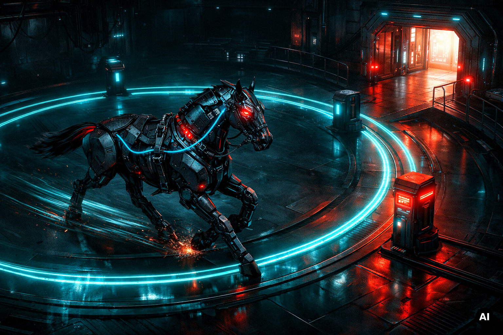

Planen, Tool wünschen, Ergebnis lesen, weiter. Und: Workflow oder Agent?

img/lvl1-schleife.png
LVL 1 · Station 1 · Interaktiv
Die Schleife Schritt für Schritt
Das Herz jedes Harness ist eine Schleife. Verfolge, wie der Agent datenbank-analyst die Frage
„Wie viele Schüler hat die Klasse 7a?“ beantwortet. Rechts siehst du das Protokoll mit denselben Etiketten wie im echten Python-Harness.
Die Schleife endet, wenn das LLM nur noch mit Text antwortet. Solange es Tool-Wünsche schickt,
führt der Harness sie aus (oder blockiert sie) und hängt die Ergebnisse an den Verlauf an. Danach fragt er das LLM erneut.
Etikett
Wer handelt?
[MENSCH ]
Ein Mensch hat etwas eingegeben oder entschieden.
[HARNESS]
Das Rahmenprogramm: Kontext schicken, prüfen, Grenzen setzen.
[LLM ]
Das Sprachmodell antwortet mit Text oder einem Tool-Wunsch.
[MCP ]
Aufruf an den MCP-Server und seine Antwort.
[AGENT ]
Start und Ende eines (Unter-)Agenten, Rückfragen.
[FEHLER ]
Etwas wurde blockiert oder ist schiefgegangen.
LVL 1 · Station 2 · Code lesen
Der kleinste mögliche Agent
So kurz ist die Schleife im Praxis-Repo (agenten/minimal_agent.py, gekürzt). Lies den Code, bevor du die Fragen aufklappst.
while True:
antwort = llm.antworte(system, nachrichten, tools) # 1. LLM fragen
nachrichten.append(antwort)
if not antwort["tool_calls"]: # 2. Keine Tool-Wünsche? Fertig!
break
for aufruf in antwort["tool_calls"]: # 3. Tools ausführen (MCP)
ergebnis = await mcp.rufe_auf(aufruf["name"], aufruf["arguments"])
nachrichten.append(ergebnis) # 4. Ergebnis zurück in den Verlauf
Code deuten
Ordne die vier Kommentare den vier Stationen im Schaubild von Station 1 zu. Welche Station fehlt im Code als eigene Zeile?
Was steht in antwort["tool_calls"], wenn das LLM eine fertige Antwort gibt?
Wer führt das Tool aus? Markiere die Zeile.
while True: Was passiert, wenn das LLM immer wieder dasselbe Tool wünscht? Wie würdest du das verhindern?
Welche Zeile müsste man ändern, damit nur bestimmte Tools ausgeführt werden? (Die Lösung siehst du in LVL 2.)
Im vollständigen Harness steckt dieselbe Schleife, aber mit Schrittlimit:
for schritt in range(1, d.max_schritte + 1):. Läuft sie durch, ohne dass das LLM fertig wird, meldet der Harness
[FEHLER ] Abbruch durch den Harness: Schrittlimit von 10 erreicht.
LVL 1 · Station 3 · Interaktiv
Workflow oder Agent?
Nicht jedes System mit LLM ist ein Agent. Bei einem Workflow legt ein Mensch die Schritte vorher fest.
Bei einem Agenten entscheidet das LLM zur Laufzeit. Ordne die Fälle zu.
LVL 1 · Station 4 · Vergleich
So einfach wie möglich
Workflow
Agent
Wer bestimmt den Ablauf?
der Programmierer, vorher
das LLM, zur Laufzeit
Beispiel
„Übersetze jede neue E-Mail und speichere sie ab.“
„Finde heraus, welche Klasse in Mathe am schwächsten ist.“
Gleiche Eingabe → gleiches Ergebnis?
ja, immer
meistens, aber nicht garantiert
Kosten
gering, oft ganz ohne LLM
Tokens bei jedem Schritt
Fehler finden
einfach: jeden Schritt ansehen
schwerer: Warum hat das LLM diese Abfrage gewählt?
Stärke
vorhersagbar, testbar, günstig
flexibel bei offenen Aufgaben
Faustregel: So einfach wie möglich. Einen Agenten baut man erst, wenn ein fester Ablauf nicht reicht.
(Nach Anthropic: Building effective agents)
Zwischen beiden Polen gibt es Mischformen: Ein Workflow kann an einer Stelle ein LLM aufrufen (z. B. zum Übersetzen), ohne dass das LLM den Ablauf bestimmt.
In LVL 5 stehen in n8n ein fester Workflow und ein Agent nebeneinander. Beide benutzen denselben MCP-Server.
LVL 1 · Station 5 · SchaubildCode lesen
Die Schleife als Graph
Man kann jeden Ablauf als Graph zeichnen: Knoten sind Arbeitsschritte, Kanten sind Übergänge.
Eine feste Kante führt immer zum selben Knoten. Eine bedingte Kante ist eine Weiche, die erst zur Laufzeit entscheidet, wohin es weitergeht.
Frameworks wie LangGraph beschreiben Agenten genau so.
Workflow: „Übersetze jede neue E-Mail“
Nur feste Kanten, keine Schleife. Der Programmierer kennt den Weg schon vorher.
Agent: datenbank-analyst
Eine bedingte Kante und ein Rücksprung. Den Weg wählt das LLM zur Laufzeit.
feste Kante: immer derselbe nächste Schritt bedingte Kante: Weiche, entscheidet anhand der LLM-Antwort
Der Agenten-Graph ist winzig. Das Spannende, also welches Tool mit welcher Abfrage, passiert im Knoten llm.
Graphen lohnen sich, wenn man den Agenten einschränken will: Je mehr Kanten fest verdrahtet sind, desto näher rückt das System an einen Workflow.
So lassen sich auch die nächsten Level zeichnen: ein Prüfknoten vor tools (LVL 2), ein Halt für die Freigabe durch den Menschen (LVL 3),
Unter-Agenten als eigene Teilgraphen (LVL 4).
So sieht derselbe Agent in LangGraph aus (vereinfacht).
Du musst LangGraph nicht installieren. Im Praxis-Repo arbeiten wir mit dem eigenen Harness und n8n. Lies den Code und vergleiche ihn mit Station 2.
from langgraph.graph import StateGraph, MessagesState, START, END
from langgraph.prebuilt import ToolNode, tools_condition
# tools: die MCP-Tools (z. B. über langchain-mcp-adapters geladen)
# llm: ein Chat-Modell, dem die Tools bekannt sind (llm.bind_tools(tools))
def llm_knoten(zustand: MessagesState):
antwort = llm.invoke(zustand["messages"]) # LLM fragen
return {"messages": [antwort]} # an den Verlauf anhängen
graph = StateGraph(MessagesState) # Zustand = Nachrichtenverlauf
graph.add_node("llm", llm_knoten) # Knoten 1
graph.add_node("tools", ToolNode(tools)) # Knoten 2: führt Tool-Wünsche aus
graph.add_edge(START, "llm") # feste Kante
graph.add_conditional_edges("llm", tools_condition) # Weiche: "tools" oder END
graph.add_edge("tools", "llm") # feste Kante zurück
agent = graph.compile()
agent.invoke({"messages": [("user", "Wie viele Schüler hat die Klasse 7a?")]})
Code deuten
Im Code steht kein while. Welche Zeile sorgt trotzdem dafür, dass sich der Ablauf wiederholt?
Ordne die Zeilen den Knoten und Kanten im Agenten-Graph oben zu. Welche Zeile ist die gestrichelte Weiche?
Welcher Zeile im Minimal-Agenten aus Station 2 entspricht tools_condition? Was prüft sie also?
Wer führt die Tools aus? Vergleiche ToolNode mit mcp.rufe_auf(…).
Im Graph ist kein Schrittlimit zu sehen. Warum braucht man trotzdem eines? (LangGraph hat dafür die Einstellung recursion_limit.)
Der Workflow links als LangGraph-Code: Welche Methode bräuchte man dort gar nicht?
Zeichne den Agenten-Graph neu mit einem Knoten pruefen zwischen llm und tools, der nur erlaubte Tools durchlässt. Welche Kanten ändern sich?
Graph-Frameworks nehmen dir die Schleife ab, verstecken sie aber auch. Wer die zehn Zeilen aus Station 2 verstanden hat,
erkennt sie in jedem Framework wieder: in LangGraph als Rücksprung-Kante, in n8n als Agent-Knoten, im eigenen Harness als for-Schleife.